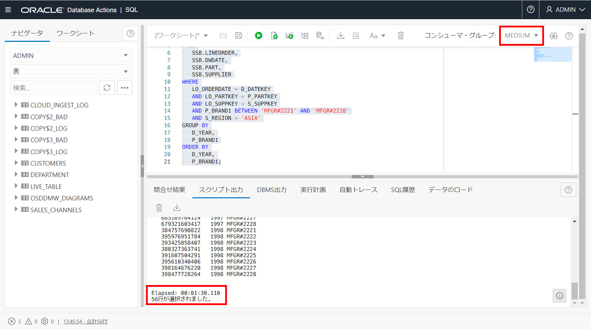

はじめに
この章ではAutonomous Databaseにおける分析系クエリの性能を確認します。
特に、インスタンスのOCPU数を増やした前後でのパフォーマンスを比較することで、簡単に性能が向上することをみていきます。
また、SQLの実行状況を確認するために、サービス・コンソールを操作いただきます。
目次
所要時間: 約40分
Star-Schema-Benchmark（SSB）とは？
ADBのインスタンスには、DWH系・分析系のサンプルスキーマとして以下が同梱されています。
- Oracle Sales History（SHスキーマ）
- Star Schema Benchmark（SSBスキーマ）
上記のサンプルスキーマの特長
- 約1TB、約60億行のファクト表と、複数のディメンション表から構成
- マニュアルには動作確認用のサンプルSQLも記載されている
- ADW、ATPの双方で利用可能（2022/10時点）- 本ガイドでは前の章で作成したAutonomous Transaction Processing(ATP) インスタンスの利用を前提に記載していますが、SSBのような分析系・DWH系のアプリケーションの場合、Autonomous Data Warehouse(ADW) をご選択いただくことを推奨しています。
※サンプルスキーマの詳細についてはこちらを参照ください。
作業の流れ
- SSBスキーマを確認しよう
- OCPU数の違いによる処理時間の差を確認しよう
- サービスコンソール/SQL Monitorで処理内容を確認しよう
1. SSBスキーマを確認しよう
データ・モデラーによる構成確認
-
ADBインスタンスを作成しようで学習したDatabase Actionsを利用したインスタンスへの接続 を参照し、Database Actionsを起動し、Adminユーザーで接続してください。ツールタブから、データベース・アクションを開くをクリックしてください。

-
Database Actionsのランディングページのデータ・ツールから データ・モデラー を選択し、SSBスキーマの構造を確認していきましょう。

-
データ・モデラーのランディングページです。画面左上のナビゲータにSSBと入力し、SSBスキーマの下記の5つの表を確認します。
- CUSTOMER表
- DWDATE表
- LINEORDER表
- PART表
- SUPPLIER表

-
SSBスキーマの5つの表を画面中央のダイアグラムに追加します。追加方法は下記の２通りあります。
- 表を右クリックし、オブジェクトをダイアグラムに追加をクリック
- 表をドラッグ&ドロップで中央に移動する

-
SSBスキーマの構造がER図で表示されました。画面中央上のセーブマーク をクリックし、ダイアグラムを保存します。
※図が重なってしまっている場合は、ドラッグして適宜移動してみてください。
-
ダイアグラム・プロパティの名前(例:SSB diagram)を入力し、OKをクリックします。

-
ダイアグラムが保存されました。OK をクリックします。

-
保存したダイアグラム(例:SSB diagram)を確認していきます。画面左上 ナビゲータの隣のダイアグラムタブをクリックします。保存したダイアグラム(例:SSB diagram)を選択後、開くをクリックします。

-
画面右上赤枠のボタンをクリックするとスキーマのDDL文を確認することができます。

-
DDL文のプレビューになります。

-
画面右上赤枠のボタンをクリックするとスキーマ・レポートを確認することができます。

-
スキーマ・レポートになります。

各表の件数確認
-
Database Actionsのランディングページに戻り、データ・ツールからSQL を選択します。

-
ワークシートの画面左上からスキーマSSB を選択します。

-
以下のスクリプトを実行して、各表の件数を確認します。
select count(1) from ssb.dwdate; select count(1) from ssb.part; select count(1) from ssb.supplier; select count(1) from ssb.customer; select count(1) from ssb.lineorder;
以上でSSBスキーマの構成、および各表に含まれる件数が確認できました。DWHとして理想的なスター・スキーマで構成されており、データサイズとしても比較的規模の大きな構成であることがご確認いただけたかと思います。
次は、OCPU数を変えて、同じSQL文を実行することで、処理の違いを体験していきましょう。
2. OCPU数の違いによる処理時間の差を確認しよう
次にもう少し複雑なクエリを実行してみます。OCPU数を変えることで、高速に処理できることを確認していきましょう。
次のクエリをコピーして、Database Actionsのワークシートに貼り付けて実行してみましょう。
すべてのOCPU数で同じクエリを実行します。
SELECT
SUM(LO_REVENUE),
D_YEAR,
P_BRAND1
FROM
SSB.LINEORDER,
SSB.DWDATE,
SSB.PART,
SSB.SUPPLIER
WHERE
LO_ORDERDATE = D_DATEKEY
AND LO_PARTKEY = P_PARTKEY
AND LO_SUPPKEY = S_SUPPKEY
AND P_BRAND1 BETWEEN 'MFGR#2221' AND 'MFGR#2228'
AND S_REGION = 'ASIA'
GROUP BY
D_YEAR,
P_BRAND1
ORDER BY
D_YEAR,
P_BRAND1;
本編ではOCPU=1および8の場合を記載しておりますが、ぜひOCPU=2,4,6と細かく変更し、OCPUが大きくなればElaped Timeが短くなることをご確認ください。
注意
ここではOCPU数を段階的に増やし、性能が向上することをご確認いただきますが、クレジット消費も比例して大きくなりますので、ご注意ください。
補足
Autonomous Databaseのマニュアルでは、上に記載しているサンプルSQL以外にも動作確認用のサンプルSQLをご用意しております。 こちらを参照ください。
OCPU=1の場合
-
画面右上の接続サービスをLOWからMEDIUMに変更し、以下のスクリプトを実行します。
現在のOCPU数は、1です。

処理にかかった時間は、00:01:30.110でした。
OCPU=8の場合
-
ここでATPの詳細画面に遷移し、スケール・アップ/ダウンを選択してください。OCPU数をスケールさせていきます。

注意
自動スケーリングの有無は任意で結構です。
自動スケーリングは複数のクエリが同時に走っているときにその効果が発揮されます。今回のように１つのクエリを走らせる分には有効にしてもしなくても性能に影響はありません。 -
OCPU数に8を入力し、更新をクリックしてください。

ATPの詳細画面でスケールアップの完了を確認後、Database ActionsのSQLワークシートに戻ります。
-
画面右上の接続サービスをMEDIUMからHIGHに変更し、クエリを実行します。現在のOCPU数は、8です。
NOTE
重たいクエリの多いDWH系のシステムでは、単一SQLを複数のコアで処理できるパラレル・クエリーが効果的です。ここからは、割り当てられたOCPUを全て利用できる接続サービスであるHIGHを選択します。
MEDIUM接続でもパラレル処理が可能ですが、同時実行性も担保するために利用できるOCPU数を4までに制限しているため、ここからは8OCPU以上を利用できるHIGH接続に切り替えてスケールアップの効果を確認します。
処理にかかった時間は、00:00:12.698でした。
ここまでで、OCPU＝1および8のときのElapsed Timeが確認できたと思います。
Autonomous Databaseでは利用可能なコア数だけでなく、割り当てメモリのサイズやIO帯域もOCPU数に比例する形で増加します。今回試したDWH系のクエリは一般的に非常に多くのリソースを消費しますが、Autonomous Databaseでは必要に応じてOCPU数を調整することで性能を担保することが可能です。
NOTE
その他、ADBでは、パーティション やHCC圧縮、マテリアライド・ビューといったOracle Database / Exadata のパフォーマンスに寄与する各種オプションも追加費用なくご利用いただけます。
次の表は、OCPU数を細かく増やしていったときのElapsed Timeをまとめたものです。
このようにOCPUが大きくなれば性能が向上していることが分かります。
| 接続サービス | OCPU数 | Elapsed Time |
|---|---|---|
| MEDIUM | 1 | 00:01:30.110 |
| 2 | 00:00:58.209 | |
| 4 | 00:00:27.212 | |
| HIGH | 8 | 00:00:12.698 |
| 16 | 00:00:08.113 | |
| 32 | 00:00:05.324 | |
| 64 | 00:00:05.102 |
※Elapsed Timeにはブレがありますので、あくまでも参考値としてご認識ください。
3. 性能調査に使えるツールのご紹介
ここからは実際にADBにて性能調査を行う際にどう言ったツールが利用できるのかをみていきたいと思います。
サービスコンソールおよびパフォーマンスハブでは次のような機能をご利用いただけます。

データベース・ダッシュボード
ADBではインスタンスの稼働状況をDatabase Actionsのデータベース・ダッシュボードを介して確認できます。 データベース・ダッシュボードからは、リソースの利用状況(CPUやストレージは十分か？どのくらい使われているか？等)を確認する時に活用します。
-
ATPの詳細画面のDatabase Actionsをクリックしてください。

-
Database Actionsの起動パッドからデータベース・ダッシュボードをクリックします。

-
概要では、ストレージの使用状況やCPU使用率、その他、実行されたSQL数や平均レスポンス時間等をご確認いただけます。

-
モニターを選択します。ここではデータベース内の待機イベントの状況、各接続サービス毎のCPU使用率などを、リアルタイムにご確認いただけます。

パフォーマンス・ハブ
一方、単一のSQLで時間のかかるものを監視、調査する場合はSQL Monitorが有用です。アプリケーションの性能調査においてポイントとなる、待機イベントの確認やSQL Monitorの確認、AWRの出力はパフォーマンス・ハブを利用することで簡単に確認することができます。
-
ATPの詳細画面のパフォーマンス・ハブをクリックしてください。

-
パフォーマンス・ハブのランディングページです。このページでは、特定の期間に使用可能なすべてのパフォーマンス・データを表示できます。 期間を選択すると、データベースのパフォーマンスが表示されます。ワークシートで実行したSQLを確認するため、SQLモニタリングをクリックします。

-
アクティビティ・サマリーの時間指定範囲に目的のSQL文がないため、SQLが見つかりません。画面左上のクイック選択から、任意の期間を選択してください。

-
期間変更後、アクティビティ・サマリー上に多くのCPUを使用している箇所が見られました。アクティビティ・サマリーの期間ウィンドウを合わせてください。SQL文が見つかりました。青文字になっているSQL IDをクリックしてください。

-
パフォーマンス・ハブ: リアルタイムSQLモニタリングページにて、クリックしたSQLの詳細を確認することができます。
こちらのページの詳細セクションでは以下のことを確認できます。
・計画統計: 選択したSQLの実行計画
・SQL: 実行したSQL文
・アクティブ・セッション: 選択したSQLのアクティブセッション履歴
・メトリック: 選択したSQLにおけるパフォーマンスを、使用中のCPU、メモリー、I/Oスループット、I/Oリクエスト数の観点から確認することが可能です。
また、画面右上のレポートの保存をクリックすると、AWRレポートをhtml形式でダウンロードすることができ、簡単にブラウザで確認・共有することができます。

以上で、この章の作業は終了です。